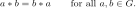
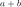
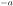

A group  is abelian (or commutative) if
is abelian (or commutative) if


, with identity and inverse
and inverse 
.An abelian group is a group whose operation ignores the order of its arguments – the additive skeleton of rings, fields, and vector spaces.
needs Group
unlocks Vector space, Modules, quotients and exact sequences, Rings, ideals and the quotient ring
mentioned in Group theory
A group is abelian (or commutative) if


, with identity and inverse 
.PDF Group Theory · Algebra · whole Mathematics